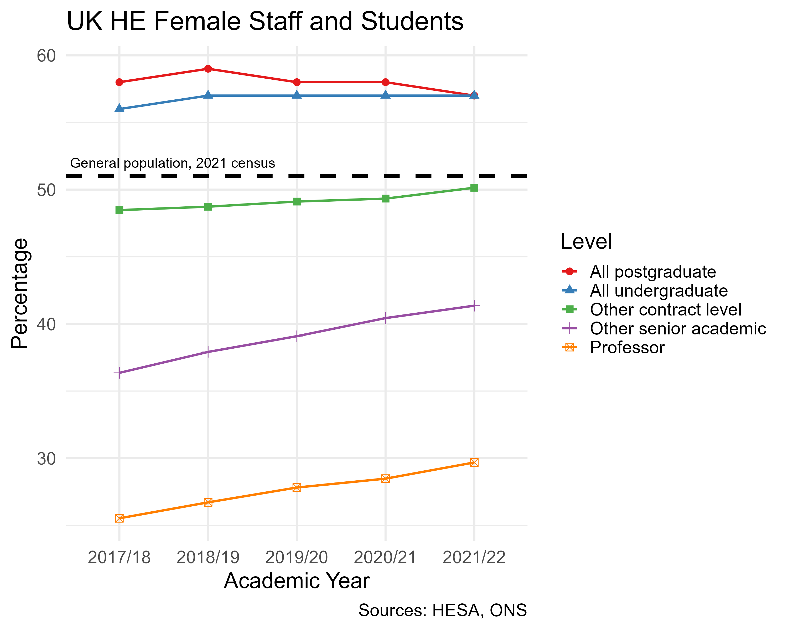

Removing software barriers for disabled researchers and RSEs
The Carpentries
5 September 2023
Findable: Software, and its associated metadata, is easy for both humans and machines to find.
Accessible: Software, and its metadata, is retrievable via standardised protocols.
Interoperable: Software interoperates with other software by exchanging data and/or metadata, and/or through interaction via application programming interfaces (APIs), described through standards.
Reusable: Software is both usable (can be executed) and reusable (can be understood, modified, built upon, or incorporated into other software).
None of these explicitly say that software should be usable by all types of people!
Ensures that everyone, including people with disabilities, older adults, and people from diverse cultural and linguistic backgrounds, can access and participate fully in society. This includes access to physical spaces, transportation, digital content, and communication.
a11y is a numeronym - like an acronym, but with numbers
There are 11 letters between the ‘a’ and ‘y’ in ‘accessibility’!
Typically pronounced “ah-lee” or “A-eleven-Y”
A person may have multiple disabilities, which may or may not intersect.
| Type of disability | Barriers in software |
|---|---|
| Visual | Colour, text size, screen reader incompatibility |
| Auditory | Lack of captions/sign language interpretation |
| Speech | Lack of text-based alternatives for speech communication |
| Mobility | Operating specific controls |
| Cognitive | Complex page layout, animations, long or complex text |
| Seizure | Moving, blinking, or flickering content |
| Psychological | |
| All | Lack of support, reduced access to events, lack of representation |

The social model is broadly preferred by the disabled community
Ask yourself: what barriers exist within my software that I could remove?
UK Equality Act 2010 (definitely)
Public Sector Bodies (Websites and Mobile Applications) (No. 2) Accessibility Regulations 2018 (depends)
A lot of the resources I share are focused on web development
But there are parts that apply to every project, be it web, GUI, or CLI
Basic checks:
Or pick a checklist to follow for a deeper dive:
Talk to me if you’d like to be part of an a11y-focused subcommunity/learning group!
Thank you for your attention!
Contact me: